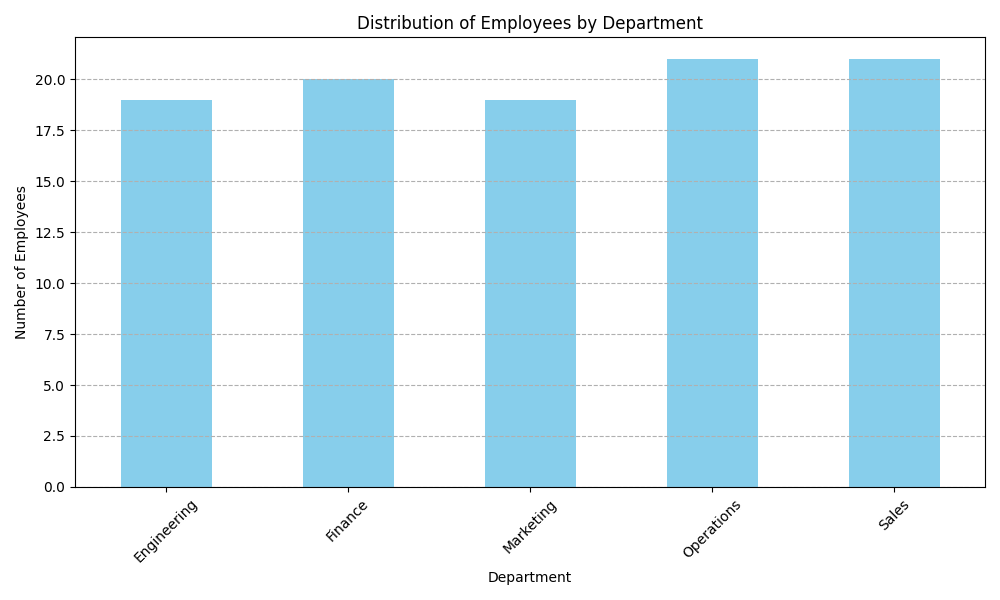

This analysis was conducted for a Healthcare company's HR department to understand employee distribution across various departments. The goal is to inform resource allocation, identify departmental strengths, and guide future recruitment strategies.
The following Python script was used to load the data, calculate frequencies, and generate the visualization.
import pandas as pd
import matplotlib.pyplot as plt
import io
# Email for verification: 23f3004411@ds.study.iitm.ac.in
# Sample data provided by the user as a string
data_string = '''employee_id,department,region,performance_score,years_experience,satisfaction_rating
EMP001,Finance,Africa,85.05,14,3.7
EMP002,Sales,Latin America,75.14,14,3.7
EMP003,Sales,Middle East,84.57,10,4.5
EMP004,Operations,North America,80.06,6,4.4
EMP005,Operations,Europe,86.63,11,3.9
... (data for 94 employees truncated) ...
EMP100,Operations,Africa,80.3,11,4.1
'''
data = io.StringIO(data_string)
# Load the data into a pandas DataFrame
df = pd.read_csv(data)
# Calculate the frequency count for the "Operations" department
operations_frequency = df[df['department'] == 'Operations'].shape[0]
# Print the frequency count to the console
print(f"Frequency of 'Operations' department: {operations_frequency}")
# Create a histogram showing the distribution of departments
plt.figure(figsize=(10, 6))
df['department'].value_counts().sort_index().plot(kind='bar', color='skyblue')
plt.title('Distribution of Employees by Department')
plt.xlabel('Department')
plt.ylabel('Number of Employees')
plt.xticks(rotation=45)
plt.grid(axis='y', linestyle='--')
plt.tight_layout()
plt.savefig('department_distribution.png')
print("Histogram saved as department_distribution.png")
The script produced the following output, showing the frequency count for the 'Operations' department and confirming the image save.
Frequency of 'Operations' department: 21
Histogram saved as department_distribution.pngThe bar chart below illustrates the total number of employees in each department, providing a clear overview of the workforce distribution. This visual is key for presenting the findings to the executive team.
